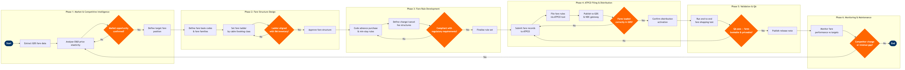

| Step | L4 Step Name | KPI / Target | Pain Point / Risk | Gate |
|---|---|---|---|---|
| 1.1 | Extract Competitive Fare Data from GDS | Competitive data refresh latency ≤24 hours | GDS fare data excludes NDC-only offers from competitors; pricing team has blind spots on ~15% of market fares filed outside ATPCO | |
| 1.2 | Analyse O&D Demand & Price Elasticity | Elasticity model R² ≥0.85 | Thin O&D markets with <500 passengers/month produce statistically unreliable elasticity estimates; models default to network averages, masking micro-market dynamics | |
| 1.3 | Confirm Market Opportunity & Pricing Mandate | Time-to-mandate ≤2 business days from competitive trigger | Pricing mandate approval chains across Revenue Management, Sales, and Network Planning frequently exceed 5 days, delaying competitive response windows | ⚠ |
| 2.1 | Define Fare Basis Codes & Fare Families | Fare basis code uniqueness — zero duplicate FBC conflicts per filing batch | Legacy fare basis code libraries carry hundreds of inactive codes; proliferation causes look-up errors in PSS and downstream revenue accounting mis-allocation | |
| 2.2 | Set Fare Ladder by Cabin & Booking Class | Average fare premium over lowest competitor ≥5% in protected markets | Misalignment between pricing booking class ladder and RM availability controls causes revenue dilution; PROS RM overrides manual fare ladders without automated reconciliation | |
| 2.3 | Validate Fare Ladder Against RM Inventory | Zero booking class conflicts at time of filing; reconciliation completed within 4 hours | RM system re-optimises availability every 15 minutes; static fare ladder snapshots become stale quickly, requiring intra-day reconciliation loops | ⚠ |
| 3.1 | Code Advance Purchase & Minimum Stay Rules | Rule coding error rate ≤0.5% per 1,000 fare rule records filed | ATPCO Category 5/6 rule logic requires manual coding in legacy field-based interface; high error rate on complex multi-sector rules requires rework averaging 2.3 hours per filing | |
| 3.2 | Define Change & Cancellation Fee Structures | Fee structure consistency — 100% of fare families have documented penalty rules before filing | Post-pandemic regulatory pressure (EU Regulation 261/2004, DOT refund rules) requires frequent penalty rule updates; manual ATPCO recoding averages 3–5 days per policy change cycle | |
| 3.3 | Set Combinability & Routing Rules | Routing rule coverage — 100% of marketed O&Ds with codeshare have valid combination rules | Airlines without alliance membership have limited combinability — standalone routing rules limit interlining revenue recovery and increase mispricing risk on complex itineraries | ⚠ |
| 4.1 | Submit Fare Records to ATPCO | Filing lead time: fares effective ≥T+24 hours from ATPCO submission; zero rejected records per batch | ATPCO batch submission windows run at fixed intervals (00:00 and 12:00 UTC); missed windows delay fare activation by up to 12 hours, ceding pricing windows to competitors | |
| 4.2 | Distribute Fares to GDS Channels | GDS distribution lag ≤2 hours post-ATPCO publication | EDIFACT-based GDS distribution is batch-driven and cannot support real-time fare updates; airlines using NDC face dual-stack maintenance (ATPCO + NDC API) with no automated synchronisation | |
| 4.3 | Publish NDC Offers via API Gateway | NDC offer availability within 1 hour of ATPCO activation; API error rate ≤0.1% | NDC offer construction requires separate fare attribute mapping not present in ATPCO records; pricing teams maintain parallel NDC content files — duplication risk is high and divergence causes fare parity violations | ⚠ |
| 5.1 | Execute End-to-End Fare Shopping Test | QA pass rate ≥99.5% of tested fare/class combinations before go-live | PSS fare calculation engine applies complex proration and tax logic; errors in Category 25 Fare by Rule records produce incorrect taxes that only surface during test and cause passenger refund exposure | ⚠ |
| 5.2 | Validate Fare Display Across All GDS Channels | Fare parity across all three GDS channels within 2 hours of ATPCO activation; zero parity breaches at go-live | GDS fare display logic applies proprietary fare selection algorithms (lowest logical fare rules); correctly filed ATPCO fares may display incorrectly due to GDS-side rule interpretation, which the airline cannot directly control | |
| 6.1 | Monitor Filed Fare Performance vs. Revenue Targets | Revenue per available seat mile (RASM) within ±3% of plan at T+7 post-filing | RM system optimises inventory in real time but does not feed back fare performance signals to ATPCO — pricing re-filing decisions are based on lagged weekly reports rather than live yield data | ⚠ |
| 6.2 | Track Competitor Fare Changes & Trigger Re-filing | Competitive response time ≤4 hours for primary O&Ds; ≤24 hours for secondary markets | ATPCO competitive alert services notify of filed fares but not NDC-only prices; carriers increasingly filing competitive fares exclusively via NDC bypass ATPCO monitoring, creating systematic intelligence gaps | ⚠ |